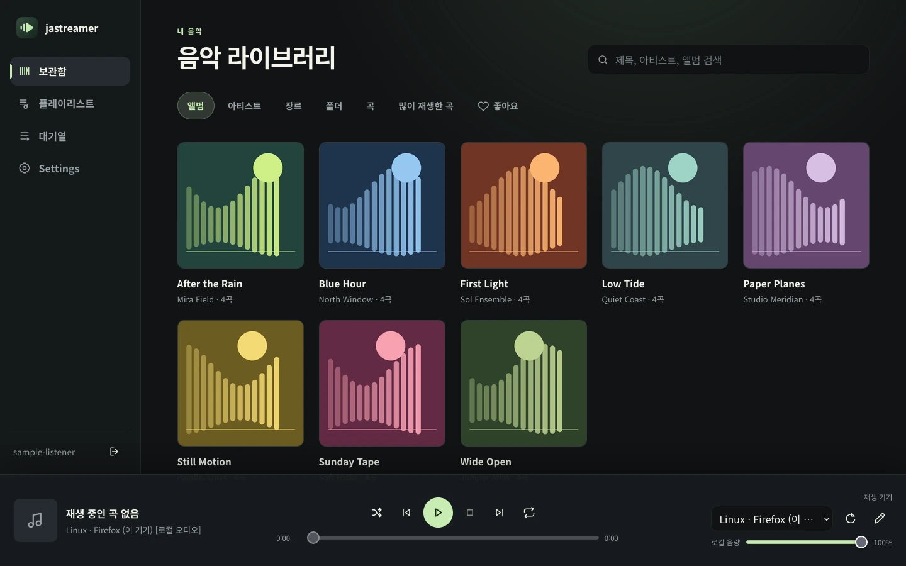
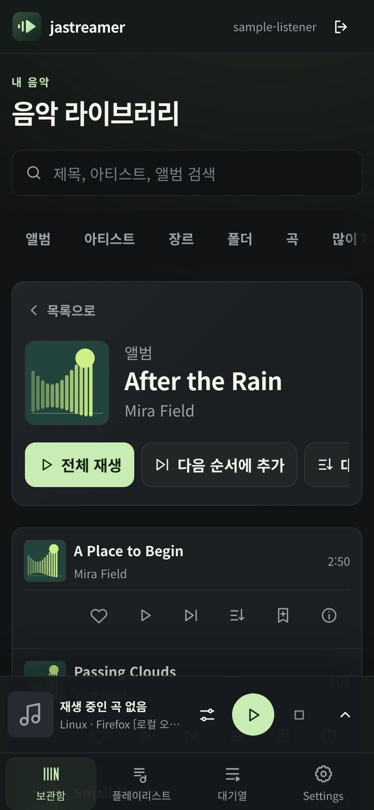

자체 호스팅 음악 서버 v0.2.3
내 음악을,
내가 고른 기기로.
Linux나 Windows Server에 내 음악을 보관하고, 컴퓨터와 휴대전화에서 같은 보관함과 대기열을 제어하세요. 내 기기 또는 지원되는 네트워크 출력으로 재생하며, 음악과 Server는 사설 네트워크 안에 둡니다.
- Linux·Windows Server
- 사용 기록 수집·분석 도구 없음
- 영어·한국어 화면
- Apache License 2.0

주요 기능
남의 클라우드가 아니라 내 네트워크에 있는 음악 보관함.
jastreamer는 사용자가 보유한 로컬 파일만 재생합니다. 상태는 Server가 보관하고, 모든 브라우저·데스크톱 앱·휴대전화가 Server가 제공하는 같은 화면을 표시합니다.
-
원본은 건드리지 않는 스캔
읽기 전용 보관함의 FLAC, MP3, WAV/WAVE, Ogg/Vorbis, Opus, M4A를 스캔합니다. 지금 스캔은 변경 없는 파일의 결과를 재사용하고, 확인 후 실행하는 전체 다시 스캔은 모든 파일을 다시 읽습니다.
-
원하는 방식으로 탐색
곡·앨범·아티스트·장르·폴더를 내장 앨범 아트와 함께 탐색하고 검색합니다. 폴더 작업은 하위 폴더의 곡까지 모두 적용됩니다.
-
집 전체에 대기열 하나
순서와 중복 곡을 유지하고 재시작 후에도 남는 Server 전역 대기열, 함께 쓰는 랜덤 재생과 반복 없음 / 전체 반복 / 한 곡 반복, 그리고 플레이리스트.
-
좋아요와 많이 재생한 곡
Server 전체에서 공유하는 좋아요와 재생 횟수, 많이 재생한 곡 목록, 한 번만 실행하는 좋아요 섞어 담기. 횟수는 데이터베이스에 저장되며 음악 파일 태그는 바꾸지 않습니다.
-
파일을 처음부터 끝까지 검증
백그라운드에서 음원을 검증하고, 필터링할 수 있는 오류·파일 검사 기록을 CSV로 내보낼 수 있습니다.
-
내가 관리하는 계정
최초 계정 생성, 비밀번호 로그인·변경·복구, 로그인 상태 유지, 그리고 직접 준비한 신뢰할 수 있는 인증서를 쓰는 선택적 내장 HTTPS.
지원 출력
- 이 기기기기별 출력 이름과 로컬 음량을 갖춘 브라우저 오디오.
- UPnP/DLNA기본 제공. LAN의 재생 기기를 찾아 제어합니다.
- Google Cast두 Server 플랫폼에서 선택 사항이며 기본값은 꺼짐입니다.
- AirPlayLinux 컨테이너에서만 전송하며 PIN·암호 인증을 지원합니다.
자동 검색에는 멀티캐스트와 Server·앱·출력 사이의 사설 LAN 경로가 필요합니다(UPnP는 SSDP UDP 1900, Cast와 AirPlay는 mDNS UDP 5353). 수신기마다 일시 정지나 탐색을 지원하지 않거나 특정 형식을 거부하거나 인증을 요구할 수 있으므로, 실제 장비에서 재생과 소리를 직접 확인하세요.
휴대전화에서
소파에서도 편하게.
iPhone·Android 휴대전화 브라우저에서는 접히는 재생 제어가 있는 네 탭 화면을 사용합니다. 휴대전화를 출력으로 고르거나, 건너편 스피커를 조작하는 리모컨으로 쓸 수 있습니다.
-
Android 앱
Android 10 이상용 서명 APK는 시스템 미디어 제어, USB 오디오 클래스 DAC으로 직접 출력하는 선택적 USB 출력, 그리고 Server나 로그인 없이 재생하는 독립 오프라인 보관함 저장된 음악을 더합니다.
-
설치형 Web 앱(PWA)
선택 사항이며 신뢰할 수 있는 HTTPS 주소가 필요합니다. 보관함을 저장하지 않는 네트워크 클라이언트이므로 오프라인으로 재생하지 않습니다.
-
iPhone·iPad
브라우저에서 Web 화면을 사용하세요. iPhone에는 휴대전화 레이아웃을, iPad에는 기본 레이아웃을 표시합니다. 네이티브 iOS 앱은 제어 전용이며 소스와 CI 빌드로만 제공되고, App Store나 TestFlight 배포는 없습니다.

내려받기 · 버전 0.2.3
먼저 Server를 설치하고, 필요한 앱을 더하세요.
모든 패키지는 GitHub의 v0.2.3 릴리즈에서 제공합니다. 설치 전에 각 파일을 검증하세요. 정확한 절차는 설치 안내에 있습니다.
모든 클라이언트에는 실행 중인 jastreamer Server가 필요합니다.
데스크톱 앱, 휴대전화 브라우저, PWA는 모두 Server가 제공하는 Web 화면을 표시합니다. 유일한 예외는 Android 앱의 저장된 음악으로, 휴대전화에 이미 가져온 음악을 Server 없이 재생합니다.
Server 필수. Linux 호스트, Synology NAS, Windows에서 실행합니다.
-
Linux·Synology amd64 · arm64
Web 화면, 오디오 전용 FFmpeg, AirPlay 송신 프로그램을 포함합니다. 태그가 아니라 릴리즈에 적힌 불변 다이제스트를 고정하세요.
arm/v7은 지원하지 않습니다. -
Windows x64 Authenticode 서명 없음
Web 화면, UPnP/DLNA, 선택적 Cast. AirPlay와 FFmpeg은 없고 Windows 서비스도 아닙니다. SmartScreen 경고가 뜰 수 있으니 SHA-256을 검증하고 압축을 풀기 전에 ZIP 차단을 해제하세요.
데스크톱 앱 기존 Server에 연결하는 선택 앱. 기본은 브라우저 오디오입니다.
-
Windows 10/11 x64 Authenticode 서명 없음
선택적 WASAPI 공유·독점 출력과 Windows 미디어 제어를 더합니다. ARM64 패키지는 없습니다. SHA-256을 검증하고 압축을 풀기 전에 ZIP 차단을 해제하세요.
-
Apple Silicon macOS 13 이상 ad-hoc 서명 · 미공증
USB DAC으로 보내는 선택적 CoreAudio 공유·독점 출력, macOS 지금 재생 중과 시스템 미디어 제어를 더합니다. 이 공식 패키지는 Apple Developer ID 서명과 공증이 없어 Gatekeeper가 실행을 막을 수 있습니다. macOS 보안을 우회하지 마세요. Intel·Rosetta·Universal 빌드는 없습니다.
-
Linux amd64
브라우저 오디오만 지원합니다. 검증 대상은 Ubuntu 24.04 amd64이며 ARM64 패키지는 없습니다. 의존성이 해결되도록 APT로 설치하세요.
휴대전화·브라우저 Android 앱, iOS 소스, 또는 LAN의 최신 브라우저.
-
Android 10 이상 서명된 release APK
jastreamer release 키로 서명했으며, 설치 전에 서명 인증서를 확인하세요. Google Play로 배포하지 않으므로 Play 프로텍트가 출처를 경고할 수 있습니다. 저장된 음악은 Server와 별개로 동작합니다.
-
iOS/iPadOS 18.4 이상 소스·CI만 제공
CI에서 소스로 빌드하는 제어 전용 네이티브 앱입니다. App Store, TestFlight 등 배포 빌드는 없으므로 iPhone에서는 브라우저 화면을 사용하세요.
-
브라우저·PWA
아무 최신 브라우저에서 Server의 LAN 주소를 여세요. PWA로 설치하려면 신뢰할 수 있는 HTTPS 주소가 필요하며, 오프라인 플레이어가 아닙니다.
설치 전에 검증하세요
모든 자산은 SHA256SUMS에 나열되고, 각 패키지는 릴리즈 페이지에 .sha256 파일과 manifest를 함께 제공하며, release-provenance.json에 소스 리비전과 CI 실행이 기록됩니다.
Android 서명 인증서 SHA-256은 53285C2C239AFF2927EBE6F5C6AEBB82FDBB50956ED84B1E9F0222B2D925943E입니다. 산출물별 서명 상태는 코드 서명 정책을 확인하세요.
설치 흐름
릴리즈부터 첫 곡까지 네 단계.
Server에는 쓰기 가능한 config·data 폴더와 음악에 대한 읽기 전용 접근이 필요합니다. 플랫폼별 세부 절차는 설치 안내에 있습니다.
-
고르고 검증하기
릴리즈를 고르고 checksum이나 이미지 다이제스트를 검증합니다.
-
Server 설치
Linux·Synology 또는 Windows에 설치하고 음악 루트는 읽기 전용으로 연결합니다.
-
계정 만들기
Server의 LAN 주소를 열어 첫 계정을 비공개로 만들고, 음악 폴더를 지정한 뒤 Settings → 보관함 → 지금 스캔을 실행합니다.
-
출력 고르고 재생
출력을 선택해 한 곡을 재생하고 소리를 확인합니다. 평소 조작법은 사용자 안내서에 있습니다.
AI 에이전트의 도움을 받고 싶다면 아래 요청을 보내세요. 제안된 경로와 서비스 변경은 직접 검토하고, 비밀번호·개인 키·토큰은 절대 프롬프트에 넣지 마세요.
https://github.com/furyheimdall/jastreamer 에서 jastreamer를 설치하거나 업데이트하도록 도와줘. 저장소 루트의 AGENTS.md를 먼저 읽고 따라줘.
한계 알기
jastreamer가 아닌 것.
분명한 경계가 음악과 네트워크, 그리고 기대치를 안전하게 지켜 줍니다.
-
인터넷 서비스가 아닙니다
신뢰하는 사설 LAN용이며 공용 인터넷에 노출하면 안 됩니다. LAN의 일반 HTTP는 인증 정보도 오디오도 암호화하지 않으므로, 필요하면 내장 HTTPS를 사용하세요.
-
클라우드나 구독 서비스가 아닙니다
보유한 로컬 파일만 재생하며 원본을 수정하지 않습니다. 사용 기록 수집, 분석 도구, 새 버전 확인, 외부 콘텐츠 불러오기가 없습니다.
-
다른 앱을 위한 미디어 서버가 아닙니다
UPnP/DLNA 재생 기기를 찾아 제어하고 음원을 전달하는 쪽이며, 다른 플레이어용 DLNA 보관함이 아닙니다.
-
브라우저용 오프라인 플레이어가 아닙니다
PWA는 보관함을 저장하지 않습니다. 오프라인 재생은 Android 앱의 저장된 음악에서만 가능합니다.
-
자동 업데이트나 앱 스토어 제품이 아닙니다
앱 안의 업데이트 기능, Windows 서비스, 앱 스토어 등록이 없습니다. 업데이트는 직접 내려받아 검증하세요. Server 업데이트는 데이터를 그대로 유지합니다.